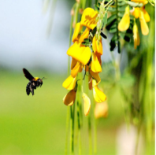

Mỗi năm, cứ vào đầu mùa nước nổi, nơi các bờ sông, bờ rạch, bờ ruộng, những cây điên điển chết héo từ những tháng ngày nào tự nhiên xanh tươi trở lại làm đẹp thêm phong cảnh Đồng bằng sông Cửu Long. Chừng một vài tháng sau, khi con nước tràn ngập các bờ sông, bờ ruộng, cũng là lúc điên điển trổ đầy cành những đóa hoa vàng rực màu nắng phương Nam, phất phơ trong ngọn gió hoặc rũ oằn trong những cơn mưa.
